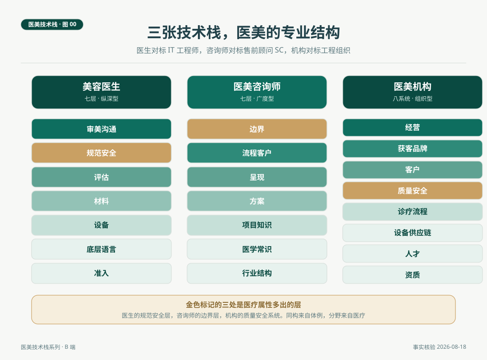

医美技术栈 · 系列总览
技术栈是 IT 行业最成熟的一个概念，指一个岗位完成全部工作所需的分层技术清单。程序员的栈有公开的通行图谱，语言、框架、数据、运维，一层一层画到可以核对。售前顾问（SC）的栈也被行业反复整理，行业知识、产品知识、方案能力、呈现能力、流程能力。医美行业有三个主体，美容医生、医美咨询师、医美机构，各自都有完整的栈，但还没有人用这个体例把它们画全。这个系列把三张栈图画出来。专业能力一旦成为可核对的清单，就不再依赖形容词。
一、为什么用技术栈讲医美
2026 年春天，一位从互联网公司出来的投资人参与一家美容皮肤科诊所的筹建。他习惯的尽调方式是把团队能力列成分层清单，逐层核对。轮到医生团队时，清单断了。他问一位皮肤科医生，你的技术栈是什么。医生想了想，报了一串仪器名字。投资人后来明白，仪器只是栈里的一层，医生真正依赖的东西，解剖、药理、参数思维、围治疗期管理，行业里没有一张画全的图。
技术栈这个词来自 IT 行业，它的价值不在于词本身，在于三件事。招聘按栈核对，学习按栈推进，市场按栈定价。一张公开的栈图，把「专业」从模糊的形容词变成可以逐项核对的清单。售前顾问（Solution Consultant，业内常称 SC）是另一个被栈图化的岗位，站在客户与工程系统之间做翻译，行业为它整理出的栈是行业知识、产品知识、技术广度、方案撰写、演示宣讲、招投标流程、客户关系，广度优先，深度交给工程师。
医美的三个主体与这两个岗位高度同构。美容医生对应工程师，是纵深型的技术栈，栈底是解剖与药理，栈中是设备与材料，栈顶是规范与沟通。医美咨询师对应售前顾问，是广度型的翻译者栈，把客人的主诉翻译成医疗语言，再把医疗方案翻译回客人听得懂的话。医美机构对应工程组织，栈的形态从个人技能变成组织系统，资质、人才、流程、质量、客户、经营，一层都不能少。
同构不等于相同。医美的三张栈图比 IT 多出来的部分，正是这两个行业最大的分野。医生的规范安全层，在 IT 栈里只是工程规范，在医美里是并发症预案与急救体系。咨询师栈的边界层，不诊断、不处方、不承诺疗效，在 SC 的栈里没有对应物，因为医疗行为法定归属执业医师。机构栈的质量安全系统，监控的对象是不良事件与感控，不是服务器。这些多出来的层不是成本，是三张栈里最值钱的部分，也是这个行业专业性的制度表达。这个系列不回避这些层，把它们放在与设备、材料同等的位置上展开。
三张图的用途分两端。B 端读者，医生、咨询师、机构经营者、行业进入者与投资人，用它做招聘核对、培训路径设计与自检。C 端读者读它，可以看懂一家机构、一位医生的专业构成，理解专业机构好在哪些系统上。图是学习与自检的地图，不是审查与贬低任何从业者的标准。
本系列以非手术医美（注射、光电、皮肤管理）为主要场景，与行业观察线的设备篇共用案例池。美容外科作为同构的纵深栈在图中并列出现，涉及解剖的篇目两者并写。
二、美容医生的技术栈（对标 IT 工程师）
| 层 | 最小集合 | 对标 IT 工程师 |
|---|---|---|
| 准入层 | 执业医师资格与注册、医疗美容主诊医师备案、急救培训 | 上岗认证 |
| 底层语言层 | 面部解剖（血管地图、脂肪室、韧带、组织层次）、皮肤生理、色素病理、药理 | 编程语言 |
| 设备层 | 激光参数思维（波长、脉宽、光斑、密度）、光电声设备品类、注册类别意识 | 框架与库 |
| 材料层 | 肉毒毒素剂量学、透明质酸特性与注射层次、胶原与再生材料、外用口服药物证据 | 数据与存储 |
| 评估层 | 皮肤分型、皮肤镜与影像分析、主诉需求轴评估、面部美学评估 | 调试与测试工具 |
| 规范安全层 | 适应症与禁忌筛查、知情同意与病历书写、并发症处置预案、感控与急救配置 | 工程规范与质量体系 |
| 审美沟通层 | 动态审美判断、概率语言沟通、预期管理、与咨询师的协作接口 | 产品思维 |
贯穿全栈的持续学习对应程序员对开源社区的跟进，共识在更新，设备在换代，注册类别在切换，医生的知识栈需要版本管理。
几层的关系用 IT 的语言说一遍。解剖与药理是语言层，医生的一切操作都写在这门语言上，血管地图不清，后面全部白学。设备像框架，提供能力平台，医生在框架上开发的应用叫方案，参数思维是框架的使用说明书。注射材料像写进去的数据，层次是写入位置，剂量是写入量，透明质酸的可溶解性是这层独有的回滚机制，工程师会羡慕这个功能。评估工具是中间件，连接主诉与方案。规范安全层保证系统长期稳定运行，审美沟通层决定做出来的东西有没有人要。准入门槛写在《医疗美容服务管理办法》里，主诊医师须为注册执业医师，美容外科要求六年以上相关临床工作经历，美容皮肤科等专业一般要求三年以上，具体按省级细则备案，多数省份限备案一个专业类别。
三、医美咨询师的技术栈（对标售前顾问 SC）
| 层 | 最小集合 | 对标 SC |
|---|---|---|
| 行业结构层 | 项目分类、机构形态与项目分级常识、价格体系与成本结构常识 | 行业知识 |
| 医学常识层 | 皮肤结构与分型常识、常见主诉地图（色素、痤疮、老化）、需交给医生的信号识别 | 技术广度 |
| 项目知识层 | 主力项目的适应症、疗程结构、恢复期、禁忌、维持时间，项目间互补与互斥关系，产品合规辨识 | 产品知识 |
| 方案层 | 主诉转译、方案组合与优先级排序、报价结构设计 | 方案撰写 |
| 呈现层 | 面诊流程与提问技术、案例与影像的规范使用、检测报告解读 | 演示宣讲 |
| 流程客户层 | 接待到随访的完整流程、客户档案与随访节点、复购与转介绍节奏 | 项目管理与客户关系 |
| 边界层 | 不诊断、不处方、不擅自变更医疗方案，宣传合规，与医生的转诊接口 | （SC 无对应层，医疗特有） |
咨询师与 SC 的同构度是三个对标里最高的，同样的翻译者定位，同样的广度优先，同样的方案与呈现双核。差别集中在两处。其一，SC 的技术广度以能用为限，咨询师的医学常识层以知道边界为限，知道什么信号必须交给医生，比知道更多项目细节更重要。其二，边界层是医疗行业特有的层，法定边界画在医疗行为四条红线，诊断、处方、治疗方案、操作实施，这些归执业医师。边界层不是咨询师的天花板，是专业性的来源，SC 靠它区分推销员与顾问，咨询师靠它区分销售岗与医疗协作岗。
这个岗位的职业化进程也是可以核验的事实。咨询师目前没有国家职业资格准入，中国整形美容协会已组织起草《医学美容咨询（设计）师国家职业技能标准》并推行规范化培训，路径是标准开发、规范培训、职业技能认定三步。行业的栈正在从经验型走向标准型，这与监管十年补课是同一条时间线（参见「医美有那么糟糕吗」系列第 08 篇）。本系列第 05、07 篇会把这张栈图与 SC 的栈逐层对照写透，立场与全刊一致，写职业化的进程，不写媒体的乱象叙事。
四、医美机构的技术栈（对标 IT 组织）
| 系统 | 最小集合 | 对标 IT 组织 |
|---|---|---|
| 资质系统 | 医疗机构执业许可证与诊疗科目、机构形态（诊所、门诊部、医院）与项目分级对应、人员资质档案 | 合规与证照 |
| 人才系统 | 按《美容医疗机构基本标准》的岗位配置、培训体系（设备、急救、流程）、职业路径设计 | 团队与梯队 |
| 设备供应链系统 | 设备组合策略、药品耗材溯源与注册证核验、耗材成本结构 | 基础设施与供应链 |
| 诊疗流程系统 | 面诊到随访的标准流程、知情同意与病历流程、多项目序贯排程规则 | 研发流水线 |
| 质量安全系统 | 感控体系、急救预案与演练、不良事件上报与复盘、投诉处理 | 监控与告警 |
| 客户系统 | 治疗史与影像档案、随访体系、长周期客户资产管理 | 用户运营体系 |
| 获客品牌系统 | 专业科普内容、平台合规运营、口碑与转介绍体系 | 市场与增长 |
| 经营系统 | 定价体系（单次、疗程、年度）、成本与财务合规、经营数据看板 | 商业化与财务 |
机构栈与个人栈的语法不同。个人栈讲深度与广度，机构栈讲系统完整与接口质量，一个系统缺失，其他系统的产出都会衰减。设备供应链系统对应行业观察第 01 篇的设备配置分析，那一篇的结论在机构栈里的位置是设备层的一个采购决策，受经营系统与质量安全系统的约束。质量安全系统是机构栈与一般服务业区别最大的系统，监控对象是感控与不良事件，反馈回路是上报与复盘而不是考核与扣款。经营系统的数据看板看复购率、单客周期、设备利用率，这些指标健康的前提是前面六个系统都真实存在。
对 C 端读者，机构栈图是一份理解清单。一家机构把自己八个系统的信息摆在明处，资质可查、流程可看、随访有节点，这是专业机构的结构样子，也是信任可以安放的位置。
五、目录
| 篇目 | 标题 | 核心命题 |
|---|---|---|
| 01 | 美容医生的技术栈全景 | 七层地图。专业能力是可核对的清单，医生的价值有结构可依 |
| 02 | 医生的底层语言是解剖 | 血管地图与组织层次，决定注射与光电的全部边界 |
| 03 | 设备与材料，医生栈的两层核心 | 能量源像框架，注射物像写入。参数思维与层次思维 |
| 04 | 医生的运维，围治疗期管理 | 评估、修复、并发症处置与随访。价值的一半在治疗之外 |
| 05 | 医美咨询师的技术栈全景 | 对标售前顾问。医疗语境的翻译者，广度优先的七层栈 |
| 06 | 咨询师的方案层，从主诉到报价 | 主诉转译、组合排序与报价结构。专业服务的核心交付 |
| 07 | 咨询师的边界层，专业性的来源 | 不诊断、不处方、不承诺。与医生的接口和转诊路径 |
| 08 | 医美机构的技术栈全景 | 八个系统。机构是组织能力，经营结果是栈的输出 |
| 09 | 机构的流程与安全系统 | 标准流程与质量体系，稳定交付与信任的制度来源 |
| 10 | 机构的经营与客户系统 | 获客、定价与客户资产。长期信任的结构基础 |
医生四篇（01 至 04），咨询师三篇（05 至 07），机构三篇（08 至 10）。三篇全景（01、05、08）各自成图可独立传播，深写篇覆盖栈里分量最重的层。
系列文件按主体分组。医生篇、咨询师篇、机构篇三个文件夹存放正文，篇目编号全局连续，配图文件夹存放全系列十一张可视化图（总览一张、每篇一张），由生成脚本统一产出，配色与版式一致，随文章修订可重新生成。三张全景图（图 1、图 5、图 8）可独立用于招聘核对表与培训材料。

六、贯穿全系列的概念
- 技术栈。完成一个岗位全部工作所需的分层能力清单，特征是可核对、可学习、可升级。
- 同构与分野。医生像工程师，咨询师像售前顾问，机构像工程组织。同构带来体例，分野来自医疗属性，多出来的层（规范安全、边界、质量安全）是行业专业性的制度表达。
- 广度与深度。医生的栈纵向深，咨询师的栈横向宽，机构的栈长在系统上。三种栈型没有高下，错配才有问题，让广度型的人去做医疗判断，让纵深型的人去全职做接待，都是栈的错配而不是人的问题。
- 栈的版本。设备注册类别在切换，共识在更新，法规在补课，职业标准在起草。栈图标注核验时间，像软件的版本号，图会迭代，体例不会。
- 显性化的价值。把专业画成公共清单，招聘、培训、定价有了共同语言。本系列对行业的贡献方向在此，正面叙事不是姿态，是这套体例自带的属性。
七、每篇结构模板
- 头部导航（第 N 篇 / 共 10 篇，所属主体，医生、咨询师或机构）。
- 封面语 150 字以内，一句话说清本篇在栈图里的位置。
- 正文约 5000 字，B 端体例。场景开篇，有人物、时间、动作，不指向真实机构与个人。栈层展开，论证只用五类可核验信息，即法规与资质、临床证据与专家共识、并发症发生率数据、价格量级（标注估算）、监管类别。自检清单，B 端读者可逐项核对的实操表。结论与失效条件，写清本层不成立的情形。
- 语言规范沿用品牌风格。标题不用冒号，正文少用冒号、引号、破折号，引号只用中文全角并成对。不用避坑、踩雷、翻车、套路、内幕、揭秘、劝退、慎入，不用「机构不想让你知道」式对立句式。年份区间用「至」。涉及法规与注册状态的信息，发布前用权威来源复核并标注时间。
八、节奏与合规
- 节奏。周更一篇，与行业观察线交替或并行，视排期而定。三篇全景先行，深写篇随后。
- 互链。第 03 篇互链行业观察 01（设备配置），第 05、07 篇互链「医美有那么糟糕吗」第 08 篇（监管补课）与第 03 篇（产品来路），第 08 篇互链行业观察 01，C 端导流入口放在「小医美的大问题」第 04、05 篇（医生与方案的消费者视角）。
- 合规边界。三张栈图与各篇自检清单不点名任何真实机构、医生、产品。不做疗效承诺。咨询师篇的边界层按法规客观陈述（医疗广告管理相关规定与市场监管总局《医疗美容广告执法指南》），不使用乱象与速成类媒体叙事，职业化进程按可核验事实写。图与清单不构成对任何从业者专业性的评判依据。
附 素材与核验说明
对标体例。 IT 工程师技术栈的通行分层（语言、框架、数据、运维、工具、规范）为行业通识。售前顾问栈的技能结构（行业知识、产品知识、技术广度、方案撰写、演示宣讲、招投标流程、客户关系）参考行业公开整理的售前能力模型与岗位要求（知乎、牛客网售前岗位经验帖，腾讯云 SkillHub 售前工作台）。
监管锚点。 医疗美容主诊医师条件与备案（《医疗美容服务管理办法》，卫生部令第 19 号，2022 年修订）。《医疗美容项目分级管理目录》（2009，美容外科项目分四级，美容皮肤科等项目不分级）。《美容医疗机构基本标准（试行）》的机构形态与人员配置要求。市场监管总局《医疗美容广告执法指南》（2021 年发布）。中国整形美容协会《医学美容咨询（设计）师国家职业技能标准》起草与规范化培训进程。以上各篇发布前逐条复核。
核验时间。 2026 年 8 月 18 日。设备与市场价格类信息沿用行业观察 01 的核验口径，报价为估算项，发布前需询价复核。